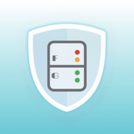
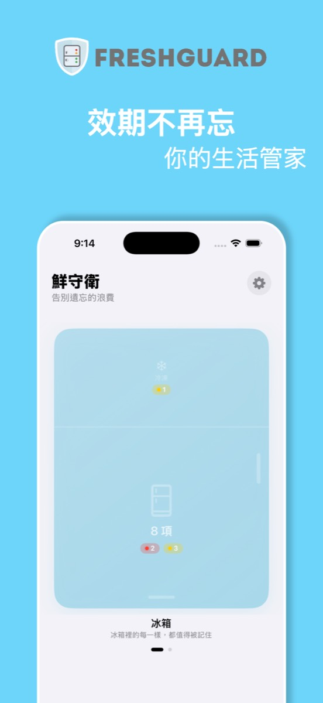
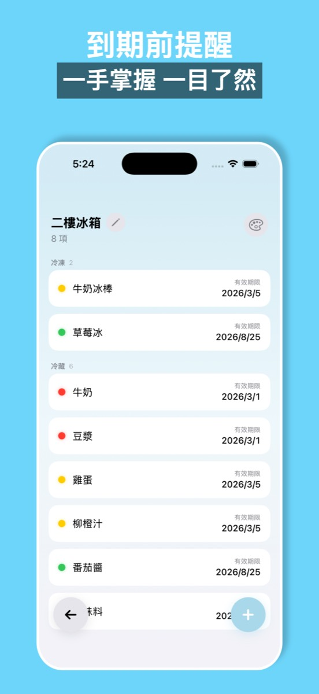
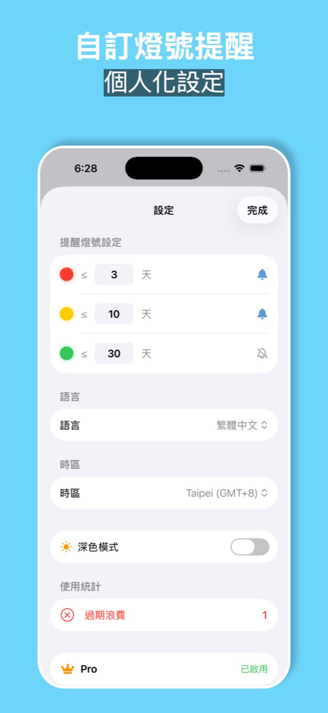

紅黃綠燈號一眼看到快過期的，到期前推播提醒。食材、保養品、保健食品、藥品分空間管理，服藥也會提醒。
在 App Store 下載


離到期 3 天紅燈、10 天黃燈，天數自己設，打開就知道先吃什麼。
快到期、到期當天都提醒，提醒時間可以自己選；App 圖示紅點顯示有幾樣快過期。
冰箱（冷凍／冷藏）、零食櫃、化妝台（開封後保質期）、保健櫃、藥櫃，各有各的分區。
保健食品和藥品設每天幾點提醒，吃了打卡，連續天數看得到。
用完了左滑「要補貨」就進清單，買回來一鍵加回追蹤。
這個月丟掉多少錢一目瞭然；小工具不開 App 就看到快過期的。
免費版可以追蹤 10 個品項，所有空間都能用；Pro 解鎖無限品項、自訂名稱顏色與每日服用提醒。
你的手機，並透過 iCloud 在你的裝置間同步，不經過我們的伺服器。
可以。設定 → 通知可以選到期提醒幾點響；服藥提醒在每個品項裡各自設定。
目前是手動輸入名稱和日期，有快速日期按鈕（3 天、1 週、1 個月、半年）。